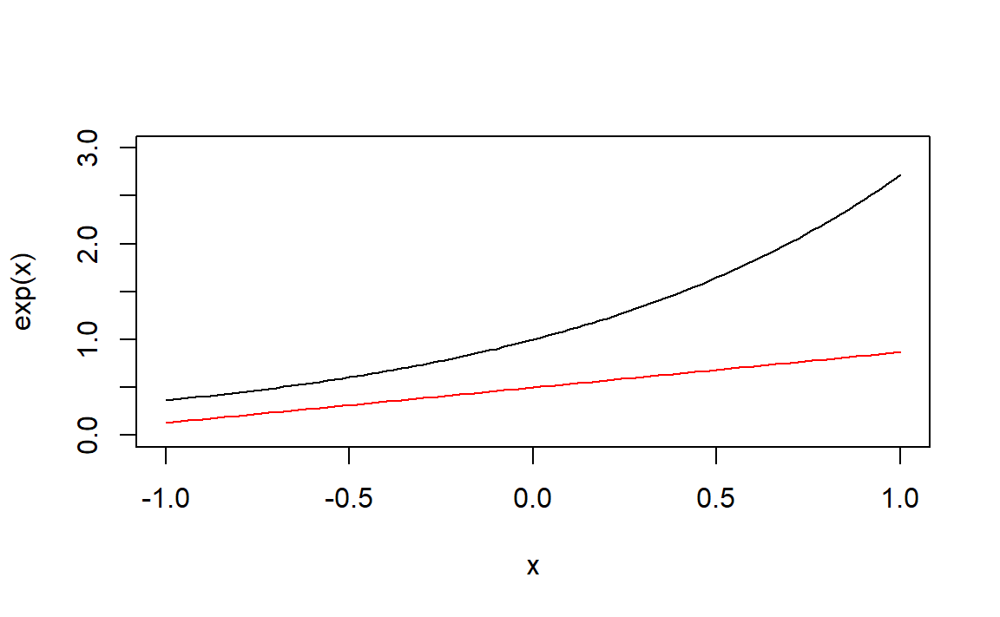
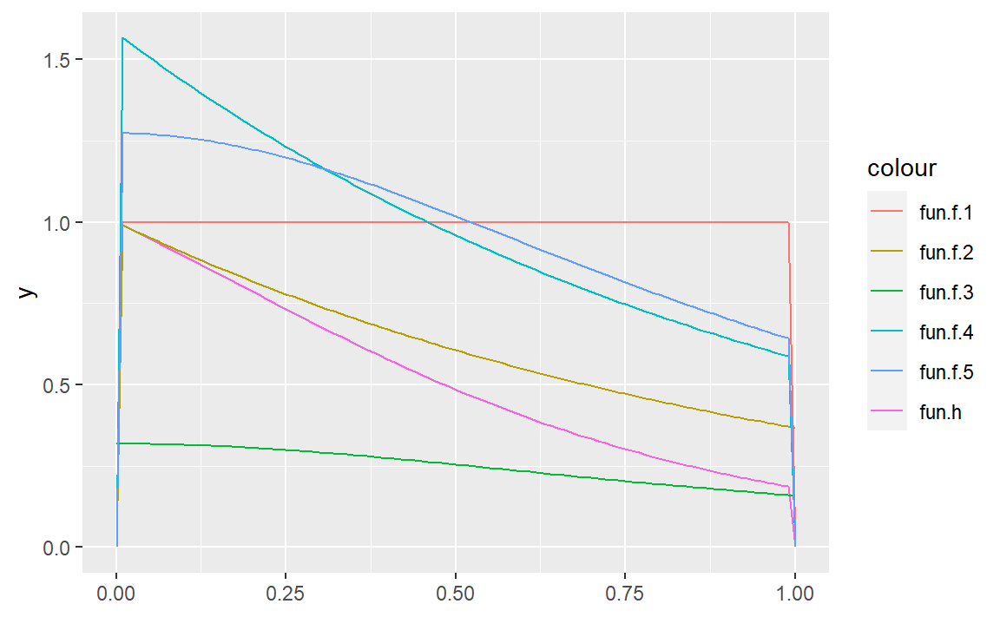

9 分层抽样法
library(tidyverse)9.1 习题
习题1
利用拉格朗日乘子法。记 \[ g(\alpha_1,\cdots,\alpha_m) = \alpha_1+\cdots+\alpha_m-1\\ L(\alpha_1,\cdots,\alpha_m,\lambda^2) = f(\alpha_1,\cdots,\alpha_m)+\lambda^2 g(\alpha_1,\cdots,\alpha_m) \]
令： \[ \frac{\partial L}{\partial \alpha_i}=-\frac{\sigma_i^2}{\alpha_i^2}+\lambda^2=0\\ \frac{\partial L}{\partial \lambda} = \alpha_1+\cdots+\alpha_m-1=0 \]
可以得到： \[ \lambda = \frac{\sigma_i}{\alpha_i} \]
则： \[ \alpha_1+\cdots+\alpha_m = \frac{\sigma_1+\cdots+\sigma_m}{\lambda} \]
可以解得 \[ \lambda = \sigma_1+\cdots+\sigma_m \]
从而： \[ \alpha_i=\frac{\sigma_i}{\sum_{k=1}^m\sigma_k},i=1,\cdots,m \]
可以验证这是最小值点。
习题2
先看一下准确值：
I.true <- exp(1)-exp(-1);I.true
#> [1] 2.350402- 随机投点法：在矩形\([-1,1]\times[0,e]\)内随机投点
# 随机投点法
# 输入：试投点数，随机种子（默认为1）
# 输出：积分估计值
method.1 <- function(N, seed=1)
{
set.seed(seed)
x <- runif(N,-1,1)
y <- runif(N,0,exp(1))
I <- 2*exp(1)*mean(y<=exp(x))
I
}
# 测试
N <- 10000
I1.est <- method.1(N);I1.est
#> [1] 2.375778平均值法：
method.2 <- function(N, seed=1)
{
set.seed(seed)
u <- runif(N,-1,1)
I <- 2*mean(exp(u))
I
}
# 测试
N <- 10000
I2.est <- method.2(N);I2.est
#> [1] 2.35767重要抽样法：可以利用梯形分布，取试投密度为 \[ g(x)=e^{-1}x+0.5,\quad x\in [-1,1] \]
为得到服从\(g(x)\)的样本，可以生成标准均匀分布随机数\(U\)，再利用变换 \[ X = -\frac{e}{2}+\sqrt{2eU+1-e+\frac {e^2}{4}} \] 即可得到\(g(x)\)的样本。
其中\(g(x)\)跟被积函数的对比如下：
curve(exp(x),-1,1,ylim=c(0,3))
curve(exp(-1)*x+0.5,-1,1,add = TRUE,col="red")
method.3 <- function(N, seed=1)
{
set.seed(seed)
u <- runif(N)
x <- -exp(1)/2+sqrt(2*exp(1)*u+1-exp(1)+exp(2)/4)
eta <- exp(x)/(exp(-1)*x+0.5)
I <- mean(eta)
}
# 测试
N <- 10000
I3.est <- method.3(N);I3.est
#> [1] 2.353182分层抽样法：这里简单点，分为\([-1,0],[0,1]\)两个区间，都使用平均值法：
method.4 <- function(N, seed=1)
{
set.seed(seed)
n <- ceiling(N/2)
# [-1,0]
u <- runif(n,-1,0)
I1 <- mean(exp(u))
# [0,1]
u <- runif(N-n)
I2 <- mean(exp(u))
I1+I2
}
# 测试
N <- 10000
I4.est <- method.4(N);I4.est
#> [1] 2.354859四种方法对比一下：
df <- data.frame(
`准确值` = I.true,
`随机投点法` = I1.est,
`平均值法` = I2.est,
`重要抽样法` = I3.est,
`分层抽样法` = I4.est
)
knitr::kable(df)| 准确值 | 随机投点法 | 平均值法 | 重要抽样法 | 分层抽样法 |
|---|---|---|---|---|
| 2.350402 | 2.375778 | 2.35767 | 2.353182 | 2.354859 |
没怎么看懂，先跳过咯
B <- 1000
N <- 10000
seed <- 1:B
I1 <- map_dbl(seed,method.1,N=N)
var1 <- var(I1)
I2 <- map_dbl(seed,method.2,N=N)
var2 <- var(I2)
I3 <- map_dbl(seed,method.3,N=N)
var3 <- var(I3)
I4 <- map_dbl(seed,method.4,N=N)
var4 <- var(I4)
df <- data.frame(
`随机投点法` = var1,
`平均值法` = var2,
`重要抽样法` = var3,
`分层抽样法` = var4
)
rownames(df) <- "抽样分布方差估计"
knitr::kable(df,row.names = TRUE)| 随机投点法 | 平均值法 | 重要抽样法 | 分层抽样法 | |
|---|---|---|---|---|
| 抽样分布方差估计 | 0.0006886 | 0.0001732 | 1.43e-05 | 5.43e-05 |
- 直接利用3的一些结果：
mae1 <- mean(abs(I1-I.true))
mae2 <- mean(abs(I2-I.true))
mae3 <- mean(abs(I3-I.true))
mae4 <- mean(abs(I4-I.true))
df <- data.frame(
`随机投点法` = mae1,
`平均值法` = mae2,
`重要抽样法` = mae3,
`分层抽样法` = mae4
)
rownames(df) <- "MAE估计"
knitr::kable(df,row.names = TRUE)| 随机投点法 | 平均值法 | 重要抽样法 | 分层抽样法 | |
|---|---|---|---|---|
| MAE估计 | 0.0208923 | 0.0104201 | 0.0030033 | 0.005848 |
重要抽样法<分层平均值抽样法<平均值法<随机投点法。
习题3
- 先定义函数：
fun.h <- function(x) ifelse(x>0&x<1,exp(-x)/(1+x^2),0);
fun.f.1 <- function(x) ifelse(x>0&x<1,1,0);
fun.f.2 <- function(x) ifelse(x>0,exp(-x),0);
fun.f.3 <- function(x) 1/(pi*(1+x^2));
fun.f.4 <- function(x) ifelse(x>0&x<1,exp(-x)/(1-exp(-1)),0);
fun.f.5 <- function(x) ifelse(x>0&x<1,4/(pi*(1+x^2)),0);## 绘图
ggplot()+
xlim(0,1)+
geom_function(fun=fun.h,aes(color="fun.h"))+
geom_function(fun=fun.f.1,aes(color="fun.f.1"))+
geom_function(fun=fun.f.2,aes(color="fun.f.2"))+
geom_function(fun=fun.f.3,aes(color="fun.f.3"))+
geom_function(fun=fun.f.4,aes(color="fun.f.4"))+
geom_function(fun=fun.f.5,aes(color="fun.f.5"))
- \(I_1\)的估计实际上是平均值法：
N <- 10000
# I1
u <- runif(N)
eta <- fun.h(u)
I1 <- mean(eta);I1
#> [1] 0.5252989
var1 <- var(eta)/N\(I_2\)需要生成\(e^{-x}\)的样本，再判断是否在\((0,1)\)内，满足就保留，再进行重要性采样。
# I2
x <- rexp(2*N)
x <- x[x>0&x<1]
n <- length(x);n
#> [1] 12675
x <- x[1:N]
eta <- n/2/N/(1+x^2)
I2 <- mean(eta);I2
#> [1] 0.5260915
var2 <- var(eta)/N\(f_3(x)\)是柯西分布，先生成柯西分布随机数，再判断是否在\((0,1)\)内，满足就保留，再进行重要性采样。
# I3
x <- rcauchy(5*N)
x <- x[x>0 & x<1]
n <- length(x);n
#> [1] 12351
x <- x[1:N]
eta <- pi*exp(-x)*n/5/N
I3 <- mean(eta);I3
#> [1] 0.5182761
var3 <- var(eta)/N\(f_4(x)\)的分布函数为\(F_4(x)=\frac{e^{-x}-1}{e^{-1}-1}\)
# I4
u <- runif(N)
x <- -log((exp(-1)-1)*u+1)
eta <- (1-exp(-1))/(1+x^2)
I4 <- mean(eta);I4
#> [1] 0.5263397
var4 <- var(eta)/N# I5
u <- runif(N)
x <- tan(pi*u/4)
eta <- pi*exp(-x)/4
I5 <- mean(eta);I5
#> [1] 0.5229833
var5 <- var(eta)/Ndf <- data.frame(
`f1` = c(I1,var1),
`f2` = c(I2,var2),
`f3` = c(I3,var3),
`f4` = c(I4,var4),
`f5` = c(I5,var5)
)
rownames(df) <- c("I估计","I的方差估计")
knitr::kable(df,row.names = TRUE,digits = 9)| f1 | f2 | f3 | f4 | f5 | |
|---|---|---|---|---|---|
| I估计 | 0.525298867 | 0.52609148 | 0.518276067 | 0.526339670 | 0.522983320 |
| I的方差估计 | 0.000005979 | 0.00000094 | 0.000001934 | 0.000000919 | 0.000001987 |
\(f_1\)的方差明显大于其他，是因为形状匹配度不及其他，另外2和4以及3和5的方法类似，方差也相差无几。
N <- 1000
m <- 10
u <- matrix(0.1*runif(m*N),m,N)
s <- seq(0,1,length.out = m+1)[-(m+1)]
u <- u+s
x <- exp(-u)/(1+u^2)/m
eta <- apply(x,1,mean)
I6 <- sum(eta);I6
#> [1] 0.5248444
var6 <- sum(apply(x,1,var))/m/N;var6
#> [1] 6.110511e-09
var1/var6 # 跟未分层的平均值法比较
#> [1] 978.4227- 按照例13.2的方法，但是有一点问题就是，每层样本数\(N_j=1\)，那每层的方差都没法计算，导致总方差也没法计算呀…
N <- 10000
u <- runif(N)
eta <- ((1:N)-1+u)/N
eta <- map_dbl(eta,fun.h)
I7 <- mean(eta);I7
#> [1] 0.5247968